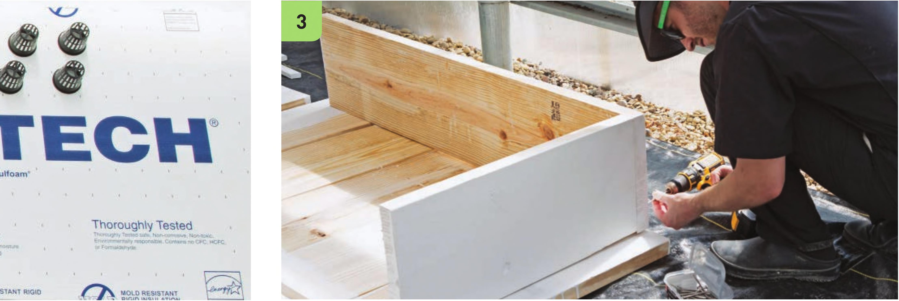

Assemble the Reservoir There are many ways to make reservoir assembly easier. Most stores that sell lumber offer to cut the lumber to specific dimensions if requested. Request the dimensions listed in the steps below to skip the work of cutting the lumber and reduce the number of tools required. It is possible to buy prefabricated reservoirs for floating rafts; check out the Pots and Trays section in the Equipment chapter to see some of the options. 1 Wearing work gloves and eye protection, cut the four 2 x 12" x 8‘ boards into the following lengths: One board into 4'4" and 2'4" segments Another board into 4'4" and 2'4" segments One board into 2T', 2'4", and 2'4" segments One board into 2T' and 2'4" segments Cut a 4T' and a 2'4" segment from each of the two 1 x 2" x 8‘ furring strips. Final lengths and quantities of cut lumber: 2 2 x 1 2" x 4'4" boards 5 2 x 1 2" x 2'4" boards 2 2 x 1 2" x 2T‘ boards 2 1 x 2" x 4'1 " strips 2 1 x 2" x 2'4" strips The lumber can be painted before or after assembly. 2 Lay the five 2 x 1 2" x 2'4" boards on a flat level surface. These boards will be the base of the system. It is possible to build the reservoir frame without a base, but a solid wood bottom can add a lot of strength to the structure. A base also helps reduce the chance of tears to the reservoir liner. Foam boards are also commonly used as a base to protect the liner from the ground. 3 Set up one of the 2 x 1 2" x 4'4" boards on its side running along the long side of the base and one of the 2 x 1 2" x 2T' boards on its side running along the short side of the base. The 4'4" board should cover the end of the 2'1" board. HYDROPONIC GROWING SYSTEMS 53
